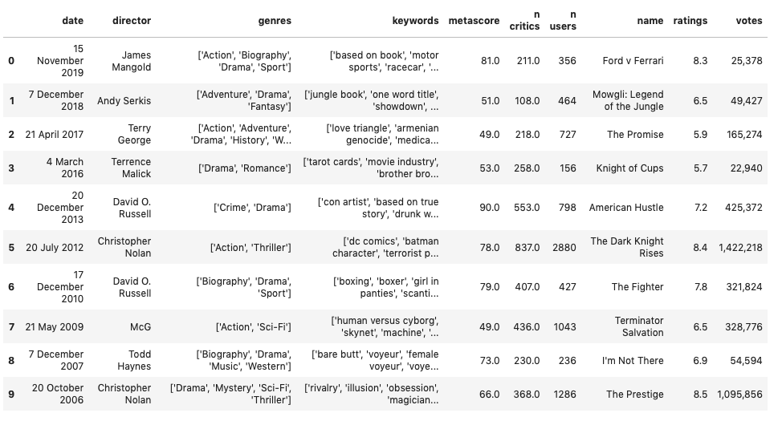

data anlysis data anlysis
data anlysis data anlysisChristian Bale is an award-winning actor who has starred in such films as 'American Psycho,' 'The Fighter' and Christopher Nolan's 'Batman' trilogy. Born in 1974 in Pembrokeshire, Wales, actor Christian Bale first enjoyed major feature film success in Steven Spielberg's Empire of the Sun (1987). Returning to the spotlight with the sadistic American Psycho (2000), he dropped more than 60 pounds for The Machinist (2004) before beefing up for a superhero role in Batman Returns (2005) and its two sequels. Bale won an Oscar for his performance in The Fighter (2010) and later earned recognition for his roles in American Hustle (2013), The Big Short (2015) and Vice (2018).
I've awlays considered myslef to be a chritsian bale and some of my favotite movies my him are Dark Knight Rises, The prestige and The Dark Knight. But upon looking at his IMDB page, I noticed that he had acted in over 52 movies. I was really curious about the other movies christaian bale acted in. I was used to watching more of his action/thriller and drama movies. A lot of question came to my mind like -

I was curious what his words defined his movies best. IMDB had data for the top keywrds that defined a movies best. For each movie I took the top 50% best keywords that defined a movies and plotted a word cloud for it.
You can hover over the words to look at the occurance of each keyword
We see words like death, murder, Violence have the highest occurace. This alligns with kind of movies Christian Bale acts in which are mostly thriller and action based. We also see keywords like husnad-wife relationship and father-son relationship which implies he has acted in lot of drama movies. ALso, the word BARE CHESTED MALE made it. Christain bale is known for his shirtless takes in movies.

Next I wanted to see what are the most popualr movies Bale acted based on the Genre. I defined populariy as the number of votes a movie recieved. Even if a movie had a low rating but a large number of reviews it will still be considred popualr.
You can Hover over the bubble to look at the movie name and number of reviews
We see that christian bale acted in mostly Action and Drama based movies. Some of his most poular movies are The Batman Triology, Prestige and American Psycho.
Next I want to look at the accomplishments of Bale i.e the awards he won over the years.
You can Hover over the timeline to view more information
Seens like christian Bale did really well in the Movies the Fighter, getting him 3 awards over the span of three years. He also won his one and only oscar for the movie Fighter in 2011.